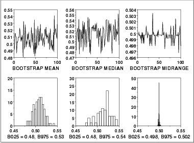

|
1.
Exploratory Data Analysis
1.3. EDA Techniques 1.3.3. Graphical Techniques: Alphabetic
|
|||
|
Purpose: Estimate uncertainty |
The bootstrap (Efron and Gong) plot is used to estimate the uncertainty of a statistic. | ||
| Generate subsamples with replacement |
To generate a bootstrap uncertainty estimate for a given
statistic from a set of data, a subsample of a size less
than or equal to the size of the data set is
generated from the data, and the statistic is calculated.
This subsample is generated with replacement so
that any data point can be sampled multiple times or not
sampled at all. This process is repeated for many
subsamples, typically between 500 and 1000. The computed
values for the statistic form an estimate of the sampling
distribution of the statistic.
For example, to estimate the uncertainty of the median from a dataset with 50 elements, we generate a subsample of 50 elements and calculate the median. This is repeated at least 500 times so that we have at least 500 values for the median. Although the number of bootstrap samples to use is somewhat arbitrary, 500 subsamples is usually sufficient. To calculate a 90% confidence interval for the median, the sample medians are sorted into ascending order and the value of the 25th median (assuming exactly 500 subsamples were taken) is the lower confidence limit while the value of the 475th median (assuming exactly 500 subsamples were taken) is the upper confidence limit. |
||
| Sample Plot: |

This bootstrap plot was generated from 500 uniform random numbers. Bootstrap plots and corresponding histograms were generated for the mean, median, and mid-range. The histograms for the corresponding statistics clearly show that for uniform random numbers the mid-range has the smallest variance and is, therefore, a superior location estimator to the mean or the median. |
||
| Definition |
The bootstrap plot is formed by:
|
||
| Questions |
The bootstrap plot is used to answer the following questions:
|
||
| Importance | The most common uncertainty calculation is generating a confidence interval for the mean. In this case, the uncertainty formula can be derived mathematically. However, there are many situations in which the uncertainty formulas are mathematically intractable. The bootstrap provides a method for calculating the uncertainty in these cases. | ||
| Cautuion on use of the bootstrap | The bootstrap is not appropriate for all distributions and statistics (Efron and Tibrashani). For example, because of the shape of the uniform distribution, the bootstrap is not appropriate for estimating the distribution of statistics that are heavily dependent on the tails, such as the range. | ||
| Related Techniques |
Histogram Jackknife The jacknife is a technique that is closely related to the bootstrap. The jackknife is beyond the scope of this handbook. See the Efron and Gong article for a discussion of the jackknife. |
||
| Case Study | The bootstrap plot is demonstrated in the uniform random numbers case study. | ||
| Software | The bootstrap is becoming more common in general purpose statistical software programs. However, it is still not supported in many of these programs. Both R software and Dataplot support a bootstrap capability. | ||